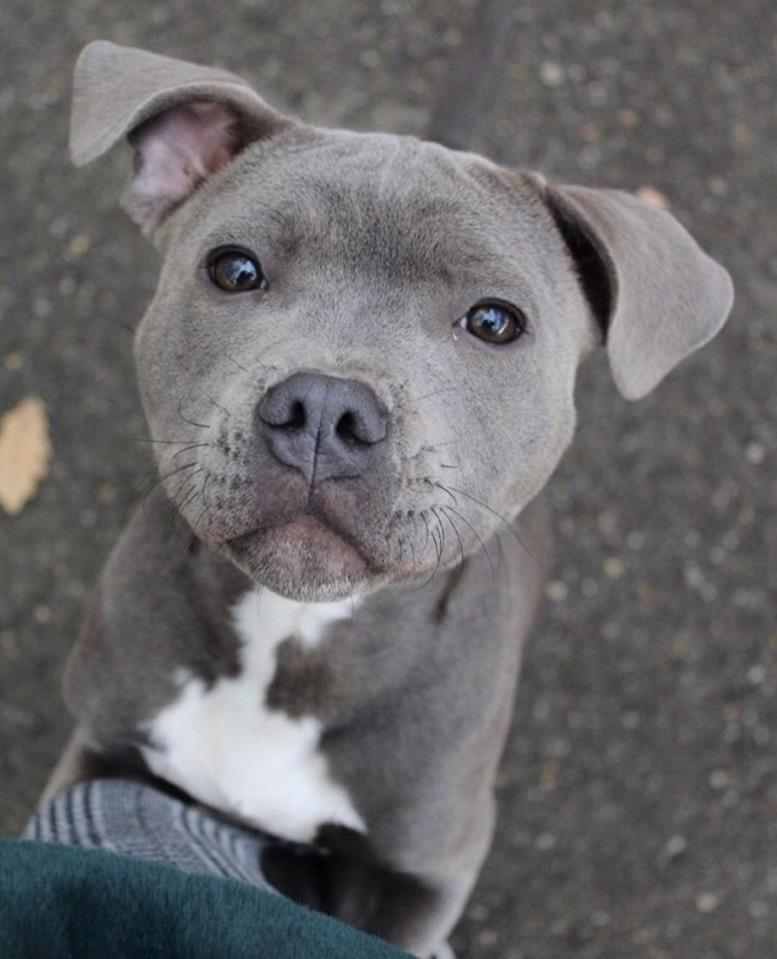
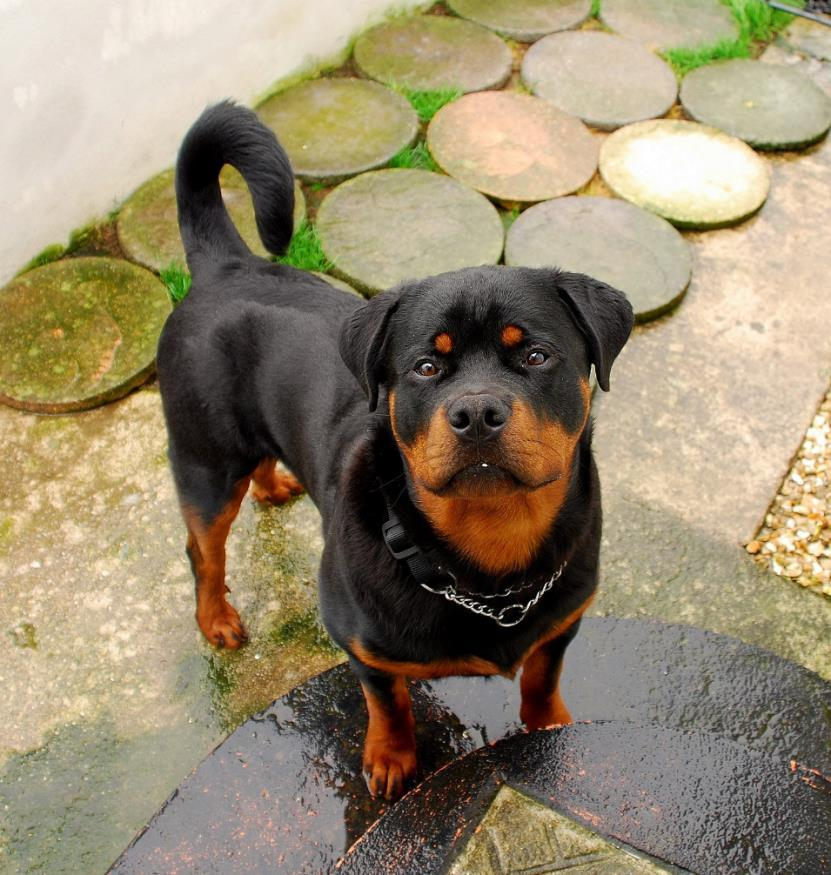
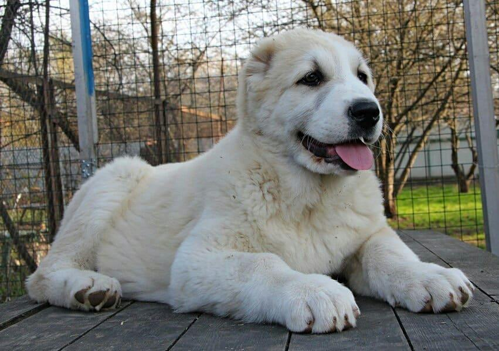

Здравствуйте, я Колобанова Виктория ученица 9 «З» класса и представительница данной статьи о сборе информации про разные породы собак. Я рассмотрю и расскажу о трёх мои любимых.
| Название породы | Страна происхождения | Продолжительность жизни | Ссылка |
| Алабай (Среднеазиатская овчарка) | СССР (регионы Средней Азии) | от 12 до 15 лет | Перейти |
| Ротвейлер | Германия | 11-12 лет | Перейти |
| Питбуль | США | 12-15 лет | Перейти |
Собака моей мечты! Мой фаворит в этом списке. Идеально сочетает скорость и силу, не мешаю домашней, уютной и семейной атмосфере.
Одна из самых красивейших пород выведенных в Германии. Член семьи многих людей в Германии, но также эта порода приглянулась и русским.
Одна из самых больших пород выведенных ещё в СССР – Алабай является отличным другом и любимцем всей семьи!
